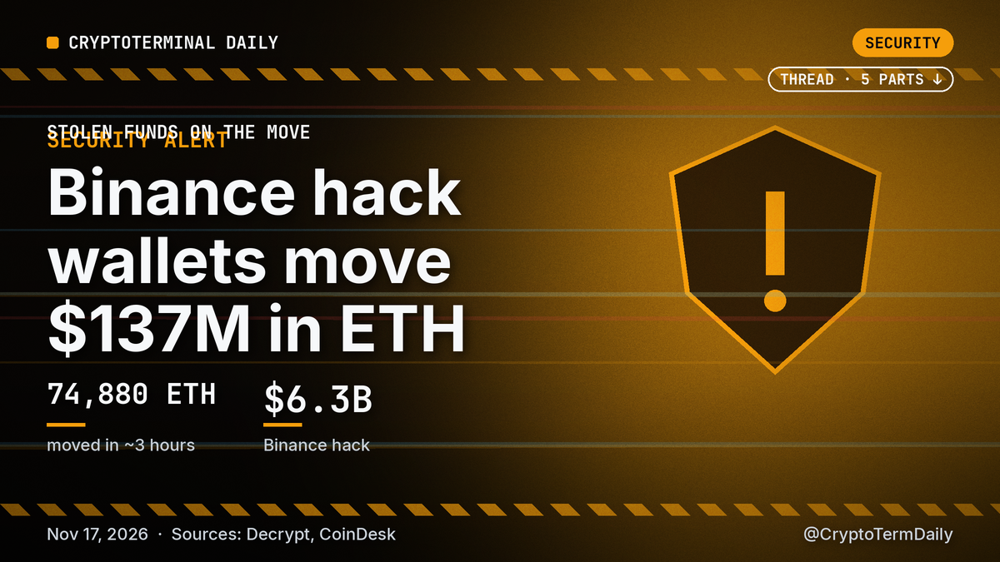

Binance hack wallets wake up: what the stolen ether is doing

Funds tied to the largest crypto theft on record are on the move again, and the way they are moving says a lot about how the attackers plan to turn stolen coins into something spendable.
What happened on Tuesday
Wallets connected to the October 29 breach of Binance had been dormant for more than two weeks. On Tuesday morning they started sending ether around. Blockchain security service MistTrack flagged the first wave: an address that had not touched its funds since October 30 sent 34,279.66 ETH, roughly $63 million at the time, into three freshly created wallets. Two of the transfers were 12,000 ETH each, and a third was about 10,279.66 ETH.
That was only part of it. A second wallet from the same operation shifted 40,600.66 ETH, around $74 million, in five separate transactions. Arkham, an analytics firm, added the two flows up and counted 74,880 ETH, valued at $136.8 million, leaving the linked addresses in about three hours. CoinDesk, which covered the earlier $63 million transfer, reported that those funds had not moved a second time when investigators checked.
Why ether and bitcoin
Arkham's data shows some of the ether is already being exchanged for bitcoin via Thorchain, a service that swaps assets across blockchains. The choice is deliberate. Tether and Circle are able to block stolen tokens on the networks they control, which makes stablecoins a risky place to park stolen money. Ether and bitcoin have no company behind them that can stop one wallet from sending funds. Decrypt describes the attackers as having rushed to turn stablecoins into assets their issuers cannot freeze.
This is a pattern worth understanding. Freezing is the fastest tool investigators have, and it only works where a central party holds a switch. Once the loot sits in assets without an issuer, recovery depends on slower work: tracing, pressure on exchanges and court orders.
The scale of the laundering effort
Elliptic put the haul at roughly $6.43 billion drained across 11 blockchains. The attackers did not keep it in a few places. Their activity touched almost 27,000 wallets and more than 83,000 transactions. A sprawling trail like that makes tracking harder, but it does not mean the coins have been turned into cash.
In fact Elliptic's latest assessment said only a negligible amount had likely been cashed out. Its November 16 analysis counted $2.85 billion as frozen or seized and found that the main bitcoin and ETH holdings still sat in addresses linked to the attack. By that date about $267 million had already been converted into bitcoin, while about $2.55 billion remained in theft-linked addresses at that day's prices. Tuesday's transfers come after that snapshot, and they show that part of the previously idle ether has now started to travel.
The recovery effort so far
Five days before, the Justice Department announced that judges had cleared it to freeze or take over $1.2 billion linked to the theft. That figure sits inside a larger total: more than $2.7 billion frozen through government and private-sector action combined. It is not a separate recovery stacked on top.
The FBI blames TraderTraitor, a group it ties to North Korea's military. Pyongyang denies any role.
What to watch next
The key question is what happens at the exit. Turning a haul this size into cash generally requires an exchange or an OTC desk that will take the coins. Every such handoff is a place where authorities could identify the money and potentially block it. That is why the mix of swaps through Thorchain, newly created wallets and thousands of intermediate addresses matters: it is an attempt to build distance between the theft and the first point where a regulated counterparty looks at the coins.
Three things will tell us whether this is the start of a large laundering run or a short burst. First, whether the three new wallets that received the first transfer send the ether onward. Second, how much more is swapped for bitcoin. Third, whether Elliptic's next update shows its cashed-out estimate moving off the floor.
For now the story is simple. After two quiet weeks, the stolen ether is flowing, the attackers are choosing assets that cannot be frozen by an issuer, and investigators say the money has largely not reached cash. The next few days will show how quickly that changes.